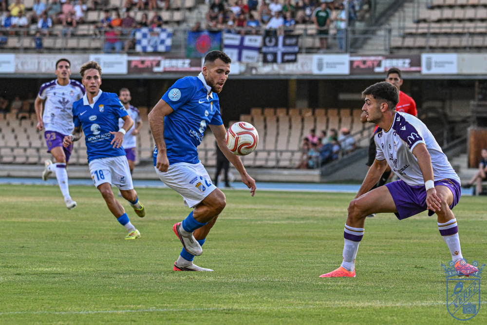
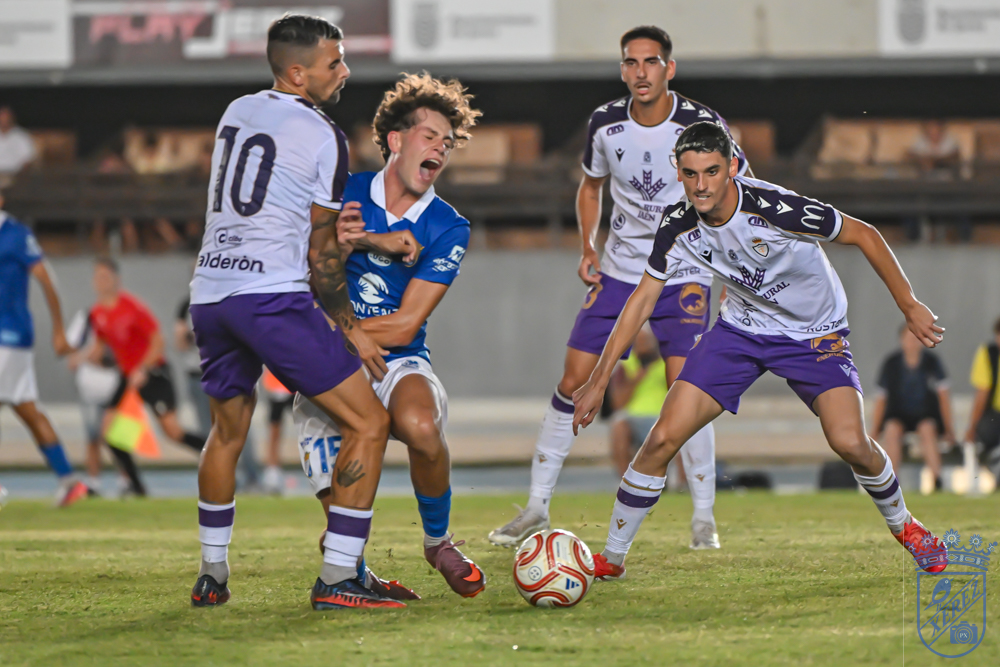
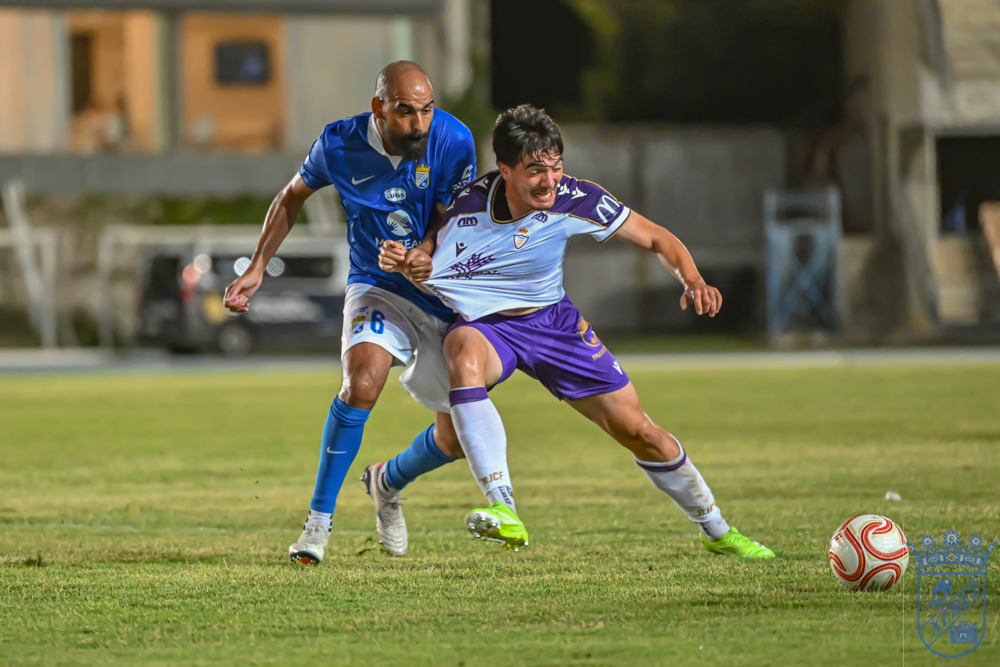

Jaén win the Vendimia and leave Xerez CD with their feet on the ground
 Xerez CD
Xerez CDMario Martos 15'
Moha Keita 75'

Photo: PuroXerecismoChapín gave its squad a warm ovation before kick-off and turned on it with jeers during the first half, on an afternoon that confirms just how much work Molist still has ahead of him.
The party lasted as long as a kick-off. Chapín experienced its most emotional pre-match moment of the summer, with the entire coaching staff and the 26/27 squad paraded out one by one, warm ovations for former Cádiz man Fali and for Saúl Romero, who came out onto the pitch on crutches, still recovering from the fracture suffered days earlier at the Pedro Garrido. But as soon as the ball started rolling, Xerez CD seemed to still be caught up in that sentimental preamble, and a more accomplished Real Jaén side, with the league just around the corner, ran out 0-3 winners in the sixth edition of the Trofeo Feria de la Vendimia.
It was hard to spot a recognisable version of Xavi Molist's side. The scattered approach with which they started the match, perhaps more focused on the pre-match ceremony than on the opponent in front of them, translated into a weak start that the Jaén side knew how to punish without mercy. There were flashes, especially as the minutes wore on, but the unfinished business of a squad still under construction was also on display: a Fali who has yet to convince in central midfield, and a defence that was excessively permissive on the visitors' first two forays into the area.
Two blows and a dressing room going quiet
Jaén did not need to insist to cause damage. On their first attack, a switch of play found Montejano with Salas and Zequi watching the play rather than defending it; the one-two with Mario Martos left the full-back alone inside the area, and his right-footed shot beat Pantoja to make it 0-1. Xerez responded with a run from Salas, sent through by a good pass from Isma, which ran into a Jaén defender, and for several minutes the ball belonged to the blue-and-whites, with the team stringing passes together and looking for space against a well-organised rival.

Photo: PuroXerecismoThe calm did not last. A low cross from Busi that nobody managed to cut out ended up at the feet of Peque Polo, who set up Mario Martos to make it 0-2 with a crossed shot. The scorer himself gave another warning soon after with a shot against the post, and the first whistles from a demanding Chapín crowd began to rain down on a nervous side unable to settle on the pitch. Mario Martos, their sharpest player, would end up going off injured before half-time, his right thigh bandaged, making way for Chino.
The other blow of the afternoon came in the form of a physical setback. Isma, up to that point the most composed player in the Xerez midfield, suddenly pulled up with a twinge in his thigh as he started a run backwards, and had to leave the pitch. With that double blow, an adverse scoreline and a costly injury, the sides went in at half-time with a Xerez CD side far from what had been expected.
Xerez find their feet with Isuskiza on the pitch
The change in the script came courtesy of Bittor Isuskiza, who came on for the injured Isma and, with his contribution, began to give the team a degree of order. The transformation was completed at the restart, when Molist reshaped the side with a back three of Guille, Moi and Galán, freed up Salas and Óscar Lorenzo out wide, brought Zequi inside and dropped Peregrina back, leaving Fali and Isuskiza running almost in parallel ahead of the defence. With that new setup, Xerez found their first move of note, with a recovery from Fali, a link-up between Isuskiza and Peregrina and a cross from Guille that Salvi Carrasco claimed without any trouble.

Photo: PuroXerecismoThe match then really opened up. A long ball from Manu Galán to Fran Gallego could have cost Xerez a third goal, but Morcillo, clean through on Pantoja, relaxed and let the chance slip. Xerez, buoyed by that let-off, began to find their rhythm: they pushed their lines up, took more risks with the ball and finally offered an image closer to the one Molist has in mind.
The thunderbolt that settled the trophy
The clearest chance for the home side came in the 64th minute, with Zequi carrying the ball and Rubén Mesa waiting alongside him in a two-on-one that came to nothing after an overly long pass. Molist then shook things up with five substitutions at once, bringing on Raúl López, Jaime López, Zelu, Josete and Jaime Fernández, and the fresh legs almost paid off with a free kick from Zelu that Isuskiza headed narrowly wide of the post.
But just as the blue-and-whites were finding their best form, Moha Keita appeared to snuff out any hint of a comeback with a long-range shot that caught Pantoja out: the final 0-3. There was still time for one last Xerez warning, with Jaime Fernández surging past at full speed and striking the post with a shot that had already beaten Salvi. There was nothing more, and the Trofeo Feria de la Vendimia, in its sixth edition, will be heading off to Jaén.
Match facts
Xerez CD: Pantoja, Guille Campos (Sebas, 84'), Manu Galán, Moi, Salas (Raúl López, 72'), Fali (Josete, 72'), Isma (Isuskiza, 39'), Zequi (Zelu, 72'), Óscar Lorenzo (Jaime Fernández, 72'), Mario Peregrina (Jaime López, 72') and Rubén Mesa.
Real Jaén: Salvi Carrasco, Montejano (Pablo, 72'), David Serrano (David Márquez, 72'), José Álvarez (Mauro, 72'), Fran Gallego (Moha Keita, 72'), Adri Paz (Óscar Lozano, 72'), Mario Martos (Chino, 29'), Peque Polo (Morcillo, 46'), Javi Moyano (Mario, 83'), Busi (Caballero, 72') and Álex Pérez (Abel Sánchez, 82').
Goals: 0-1 (4') Montejano. 0-2 (15') Mario Martos. 0-3 (75') Moha Keita.
Referee: José Antonio Palomares. Booked home players Salas, Isma, Guille Campos and Fali, and visitors Montejano and Busi.
Notes: sixth edition of the Trofeo Feria de la Vendimia, played at the Estadio Municipal de Chapín. Before kick-off, the coaching staff and squad for the 2026/27 season were presented, and Chapín gave them a big ovation. The mood shifted during parts of the first half, when the stands responded with whistles at the team's poor performance. The pitch was in uneven condition, though somewhat better than in previous matches. A small group of Jaén supporters made the trip to Chapín to support their side.
🇪🇸 Leer en español ← Back to home